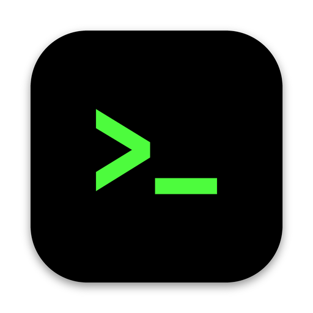

01
Explorer column
A file tree beside the terminal that follows the focused folder, colours files by git status and updates live. Toggle it with ⌃⌘E.

GMUX GitHub GitHubMeet GMUX
macOS · Apple Silicon
Terminals, a file explorer, git history and live diffs, side by side. Write, run and review code, by hand or with AI agents, without switching apps.
~/code/web-app on main >_ npm test ✓ routes (12 tests) ✓ auth (8 tests) >_ claude "add a sign-in route" Editing src/auth.ts Editing src/app.ts >_
12 import { router } from "./routes" 13 import { legacyAuth } from "./old" 13 import { signIn } from "./auth" 14 15 app.use(router) 16 app.use(legacyAuth()) 16 app.post("/sign-in", signIn) 17 app.listen(3000)
Vertical workspace tabs, splits, a built-in browser and notifications, with the file tree, history and diffs right beside your terminals.
Features
01
Explorer column
A file tree beside the terminal that follows the focused folder, colours files by git status and updates live. Toggle it with ⌃⌘E.
02
Follow-agent mode
Each file an agent edits opens beside its terminal as a live diff, with removed lines in red and new lines in green.
03
Branch and commit graph
Branch lanes, merges and tags under the tree. Click a commit to list its files and open each one's diff.
04
Agent markers
Files edited in the last 15 minutes get a dot, and so do the folders that hold them.
05
Preview tabs
Single-click to preview a file in a reusable tab. Double-click to keep it open.
06
cmux files CLI
Agents and scripts can reveal, open and follow files, or print the tree and graph.
Install
About 30 minutes
GMUX is built from source on an Apple Silicon Mac. No Apple developer account is needed: the app is signed on your machine, for your own use.
01
Install the tools
Xcode from the App Store, opened once. Then the Metal toolchain, Rust and Zig 0.16.0.
>_ xcodebuild -downloadComponent MetalToolchain >_ curl --proto '=https' --tlsv1.2 -sSf https://sh.rustup.rs | sh >_ mkdir -p ~/.local/zig >_ curl -L https://ziglang.org/download/0.16.0/zig-aarch64-macos-0.16.0.tar.xz | tar -xJ -C ~/.local/zig
02
Get the code
Clone the repository and fetch the submodules and the prebuilt Ghostty library.
>_ git clone https://github.com/Gabe-Soler/GMUX.git ~/GMUX >_ cd ~/GMUX >_ export PATH="$HOME/.local/zig/zig-aarch64-macos-0.16.0:$HOME/.cargo/bin:$PATH" >_ ./scripts/setup.sh
03
Build and install
Run it from macOS's Terminal app. It installs /Applications/GMUX.app and opens it. On first launch, right-click the app and choose Open.
>_ cd ~/GMUX && ./scripts/gmux-install.shUpdating
Pull the latest code and run the install script again.
>_ cd ~/GMUX && git pull && ./scripts/gmux-install.shThe installer switches off the parts of cmux that talk to cmux's servers, using cmux's own administrator policies. GMUX runs alongside a regular cmux install and keeps its own settings.
| Policy | Effect | State |
|---|---|---|
| DisableTelemetry | No crash reports or anonymous analytics are sent. | Off |
| DisableAutoUpdate | Never replaced by an official cmux release. | Off |
| DisableCloud | cmux Cloud machines and the Cloud VPN are hidden. | Off |
| DisableRemoteControl | No iOS companion pairing. | Off |